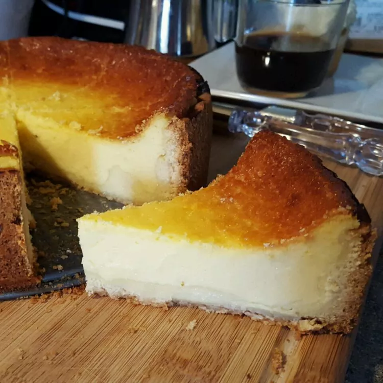

Käsekuchen (German Cheesecake)

This is an authentic German cheesecake recipe from my friend Isolde.
Ingredients
- ⅜ cup butter
- ½ cup white sugar
- 1 egg
- 1 teaspoon baking powder
- 1 ⅓ cups all-purpose flour
- 18 ounces quark
- 3 tablespoons oil
- ¾ cup white sugar
- 1 individual packet vanilla sugar
- 1 (3 ounce) package non-instant vanilla pudding mix
- 2 egg yolks
- 1 egg
- 2 ⅛ cups milk
- 2 tablespoons fresh lemon juice
Directions
- Step
Preheat oven to 350 degrees F (175 degrees C). Lightly grease a 9 inch springform pan.
- Step
In a medium bowl, mix together the butter and sugar until smooth. Mix in 1 egg, then stir in the baking powder and flour. Knead together into dough. Press into the bottom and up the sides of the prepared pan.
- Step
Mix together the quark, oil, 3/4 cup white sugar, vanilla sugar, and pudding mix in a large bowl until smooth. Blend in the egg yolks, egg, milk, and lemon juice; pour mixture into the prepared pan.
- Step
Bake in preheated oven until the filling no longer moves when you shake the pan, about 1 hour.